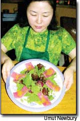
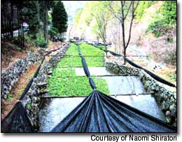
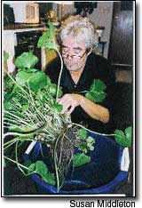

Experience the exquisite, hot torture (and make money, too).
Cautiously, you dip a piece of tuna into the green paste and touch it to your tongue. Instantly, flames roll backward to the roof of your mouth. Then, just as suddenly, the fiery intensity is replaced by complex, flowery flavors so sweet and enticing that you are compelled to cry, “Yes! Oh yes!” A bite of wasabi can do wonders for your culinary life. If you grow it for the gourmet market, it also could be a boon for your wallet.
Forget the gooey stuff often sold along with grocery-store sushi. It’s most likely green-tinted horseradish enhanced with either mustard or vinegar. Real wasabi is milder and sweeter, with a grainier texture.
Wasabi (Wasabia japonica) is a crucifer plant in the mustard family harvested for its underground fibrous stem (rhizome, to be botanically correct). Removing the corky skin with a vegetable peeler reveals the sought-after green gem of flavor. Stems are grated finely and piled on sushi, grilled fish and other delicate foods that are enhanced by its potency. Ground wasabi combined with rice wine vinegar and sesame oil turns a simple plate of sliced cucumbers into a four-star restaurant starter. Melted butter with grated wasabi does incredible things to steaks and chops.
Freshly grated or ground wasabi loses its flavor quickly - within an hour or two. That is why many commercial wasabi pastes and powders are heavily fortified with horseradish to maintain their pungency. The delicate flowery tones that make wasabi so appealing are obviously missing in pre-packaged products. Pure wasabi pastes are available, but they must be kept chilled or frozen to retain the flavor. As a consequence, it’s best to stick with fresh stems if you can. They store well in the refrigerator for up to a month if sealed in a plastic bag. Rinse them every couple of days and trim away any black spots.
If you want to try real wasabi, expect to pay a lot. Pacific Farms USA sells wasabi paste at $24.95 for a half pound, plus shipping [www.freshwasabi.com; (800) 927-2248]. Tubes of wasabi paste can run as high as $40 with postage, and restaurants pay nearly as much for fresh wasabi stems.
The premium price is due to three factors: Wasabi requires specific conditions for cultivation, takes nearly two years to mature and must be shipped immediately to protect its delicacy. The price may be a nuisance if you’re trying to put wasabi on your plate, but it’s a great reason to put wasabi in your garden. The plant can be a profitable crop for market growers able to expeditiously transport it to buyers.
Cultivation
According to Washington State University’s (WSU) Extension Service, Vancouver, Wash., wasabi culture requires heavy shade; shallow, cold running water and a cool, yet temperate climate - like shaded, wet banks of mountain streams in Japan, where wild wasabi grows.
In the United States, the traditional Japanese method of water cultivation (see photo above) may be intimidating to many would-be growers. The WSU Extension staff maintains that the ideal commercial site would be a spring-fed area or diverted stream, lined with gravel and shaded by trees, because a constant supply of cool running water and a loose gravel bed are essential for production.
But wasabi cultivation doesn’t have to be this structured. Chris Jones of The Frogfarm in Seattle has researched wasabi growing techniques in Taiwan, China and Japan, and he grows the plant on his farm. “There is a mystical thing about growing it, the water and all, but it’s only a plant,” Jones says. “Frankly, I think water culture is time-intensive and expensive.”
Jones uses another method of growing wasabi, one the average gardener can duplicate with a little effort. He grows the plants in compost under shade cloth. To maintain high humidity, the plant’s foliage is sprayed with water once or twice a day.
Rose Marie Nichols McGee of Nichols Garden Nursery in Albany, Ore., has another easy idea. She says the simplest growing technique for wasabi utilizes small wading pools at least 15 inches deep. Punch a few holes in the bottom and line the pool with black plastic that also has several small holes for gentle; this prevents the water from becoming stagnant. Fill the pools with rich soil and plant.
Jones says wasabi can be grown outdoors in any part of the country where winter temperatures don’t fall regularly below 20 degrees. In colder areas, plants can be mulched, hoop-housed or brought indoors. The Frogfarm Web site (www.wasabifarm.com) has complete instructions on how to grow wasabi. For information about ordering wasabi plants.
Wasabi Plant Sources
The Frogfarm
3408 N.E. 193rd St. Seattle, WA 98155 (206) 361-1981
www.wasabifarm.com
Plants are $7.50 each, plus $5 shipping for every three plants.
Nichols Garden Nursery
1190 Old Salem Road N.E. Albany, OR 97321 (800) 422-3985
www.nicholsgardennursery.com
Plants are priced and shipped in the spring.
|
 A wasabi field in Utougi, Japan, the cradle of Japanese wasabi cultivation. |
 Chris Jones grows wasabi on The Frogfarm in Seattle. Jenny Shin, kitchen chef at Wa in Lawrence, Kan., prepares tuna salad with wasabi sauce. |
 |